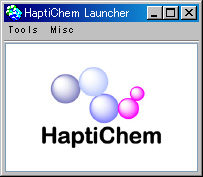

|
もくじ：
HaptiChemランチャーは、「HaptiChemシステム」をインストールすると自動的に開き、 ツールの主な機能へのアクセスを提供します。
HaptiChemランチャーの画面は以下のようになっています。

メニューを選択して、「HaptiChemシステム」の機能を利用します。
ウィンドウの上部にあるメニューです。
|
|
|
|
分子間力（希ガス２分子）を体験するツール 「希ガス２分子間の相互作用」の関連ウィンドウを全て開きます。
|
|
||||||||||||
仮想的な SPIDAR-G を表示する 「 スパイダー・ビューファインダ 」を開きます。
|
|
|
「HaptiChemシステム」の使用手引きの トップページ をブラウザで開きます。
起動時などに出てくるスプラッシュウィンドウを開きます。
「HaptiChemシステム」のバージョンや、ランチャーの画像が表示されます。
|
著作権について表示します。
日本語：
著作権は大学共同利用機関法人情報・システム研究機構国立情報学研究所に帰属されています．
English：
Copyright 2002-2007 National Institute of Informatics, Research Organization
of Information and Systems
上記の文章が電光掲示板のように表示されます。
早く文章を流したいときは、[Alt]キーもしくは [Shift]キーを押します。
両方のキーを押すと、さらに早く文章が流れます。
「HaptiChemシステム」に関連するページを開きます。
国立情報学研究所 「HaptiChemシステム」のページ：
http://research.nii.ac.jp/~cheminfo/HaptiChem/
システムを利用して質問などがある場合にメールを送ります。
国立情報学研究所 化学情報学研究室
cheminfo＠nii.ac.jp
ケモじゅんのランチャーを開きます。
化学系グラフィックスオープンソースライブラリの機能を利用できます。
|
フリーソフトウェア「ケモじゅん」のページ：
http://research.nii.ac.jp/~cheminfo/ChemoJun/


{kind=link}
{kind=link}
{kind=link}
{kind=link}
{kind=link}
{kind=link}
{kind=link}
{kind=link}